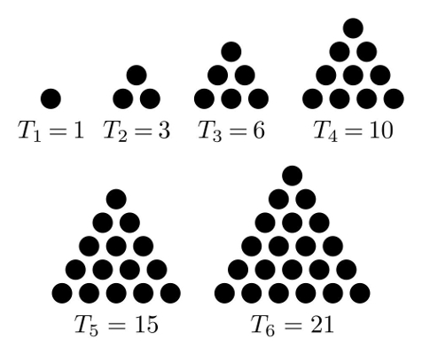
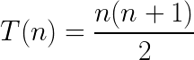
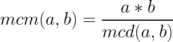
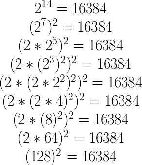

Matemáticas
- Conversiones
- BigInteger y BigDecimal
- Criba de Eratostenes
- Numeros triangulares
- MCM Y MCD
- Aritmética modular
- Exponenciación binaria
Conversiones: De otra base a Entero
String bin = "111";
int dec = Integer.parseInt(bin, 2);
String octal = "777";
dec = Integer.parseInt(octal, 8);
String hexa = "FFF";
dec = Integer.parseInt(hexa, 16);
Conversiones: De entero a otras bases
int dec = 125;
String bin = Integer.toString(dec, 2);
String octa = Integer.toString(dec, 8);
String hexa = Integer.toString(dec, 16);
BigInteger
El mayor número que puede guardarse en un Long en java es: 9.223.372.036.854.775.807. Si se necesita almacenar u operar un número mas grande puede usarse BigInteger que teoricamente no tiene limite de tamaño.
IMPORTANTE: Usar SOLO cuando sea necesario. Es mucho mas lento que trabajar con int o long.
BigInteger num = new BigInteger("12333566576542341345465656");
BigInteger num2 = new BigInteger("1345657543245678765434565");
num = num.add(num2); // num = num + num2;
num = num.subtract(num2); // num = num - num2;
num = num.multiply(num2); // num = num * num2;
num = num.divide(num2); // num = num / num2;
System.out.println(num.toString());
BigDecimal
El mismo principio de BigInteger pero para valores reales. Corrige problemas de precisión con doubles, pero al igual que los BigInteger, son mas lentos que los datos primitivos. Usar SOLO cuando sea necesario.
Numeros primos: Criba de Eratostenes

Criba de Eratostenes
static ArrayList<Integer> primes = new ArrayList<Integer>();
static boolean sieve[] = new boolean[10000005];
Criba de Eratostenes
static ArrayList<Integer> primes = new ArrayList<Integer>();
static boolean sieve[] = new boolean[10000005];
static void calculatePrimes() {
sieve[0] = sieve[1] = true;
int i;
}
Criba de Eratostenes
static ArrayList<Integer> primes = new ArrayList<Integer>();
static boolean sieve[] = new boolean[10000005];
static void calculatePrimes() {
sieve[0] = sieve[1] = true;
int i;
for (i = 2; i * i ≤ 10000005; ++i) {
if (!sieve[i]) {
primes.add(i);
for (int j = i * i; j ≤ 10000005; j += i)
sieve[j] = true;
}
}
}
Criba de Eratostenes
static ArrayList<Integer> primes = new ArrayList<Integer>();
static boolean sieve[] = new boolean[10000005];
static void calculatePrimes() {
sieve[0] = sieve[1] = true;
int i;
for (i = 2; i * i ≤ 10000005; ++i) {
if (!sieve[i]) {
primes.add(i);
for (int j = i * i; j ≤ 10000005; j += i)
sieve[j] = true;
}
}
for(; i ≤ 10000005; i++){
if (!sieve[i]) {
primes.add(i);
}
}
}
Criba de Eratostenes
Código disponible en Github
Números Triangulares
Números Triangulares
Máximo Común Divisor
- Se divide el número mayor entre el menor.
- Si la división es exacta, el divisor es el m.c.d.
- Si La división no es exacta, dividimos el divisor entre el resto obtenido y se continúa de esta forma hasta obtener una división exacta, siendo el último divisor el m.c.d.
Máximo Común Divisor
MCD(72,16) = 8

Código disponible en Github
Mínimo Común Multiplo
Código disponible en Github
Aritmética Modular
Muchos ejercicios dan como respuesta valores numericos muy altos. Por eso los enunciados indican que la salida debe darse en módulo de un número alto (Ej: mod 10^9 + 7). Es decir, lo que debemos imprimir será rta % 1000000007.
Cuando debamos trabajar con módulos como en este caso, debemos conocer las propiedades del módulo.
Propiedad Neutral
(a % b) % b = a % b
Ejemplo: (10 % 3) % 3 = 1 % 3 = 1
10 % 3 = 1
Propiedad asociativa de la multiplicación
(ab) % c = ((a % c)(b % c)) % c
Ejemplo: (10 * 5) % 3 = 50 % 3 = 2
((10 % 3) * (5 % 3)) % 3 = (1 * 2) % 3 = 2 % 3 = 2
Propiedad asociativa de la suma
(a + b) % c = ((a % c) + (b % c)) % c
Ejemplo: (10 + 5) % 3 = 15 % 3 = 0
((10 % 3) + (5 % 3)) % 3 = (1 + 2) % 3 = 3 % 3 = 0
Exponenciación binaria

Exponenciación binaria
Código disponible en Github